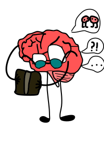

QUÉ ES O QUÉ SON LOS TRASTORNOS MENTALES



Audio sobre los trastornos mentales
Aquí, para los oyentes experimentados, tenemos un podcast sobre los trastornos mentales de 14:43 minutos, cuyos créditos vienen de parte de Brain to Brain - Psicología, de la aplicación o sitio web llamado Spotify, por lo cual es ideal si tu atención está más centrada y aplicada en el área de la escucha :3.
Video sobre los trastornos mentales
Aquí está un video que proviene del canal Mente Aprende, en el cual el psicólogo Jorge Franco da las mismas explicaciones que el podcast de Spotify, solo cambiando algunas frases o palabras, por lo cual está hecho para las personas principiantes en el tema, ya que va mostrando imágenes según explica cómo afectan al cerebro, visualizándolo.
Todo sobre esta parte
Aquí todo lo que quiero llegar es cómo, por medio de las explicaciones de los trastornos mentales, pueden cambiar los hábitos de una persona drásticamente o incluso su vida, lo cual nos ayuda a identificarlos por si acaso nosotros tenemos uno, para no dejarnos llevar, o para identificárselo a otra persona, ya que los trastornos mentales, por más comunes o poco peligrosos que sean, pueden ser malos y dañarle la vida a una persona o a nosotros mismos.